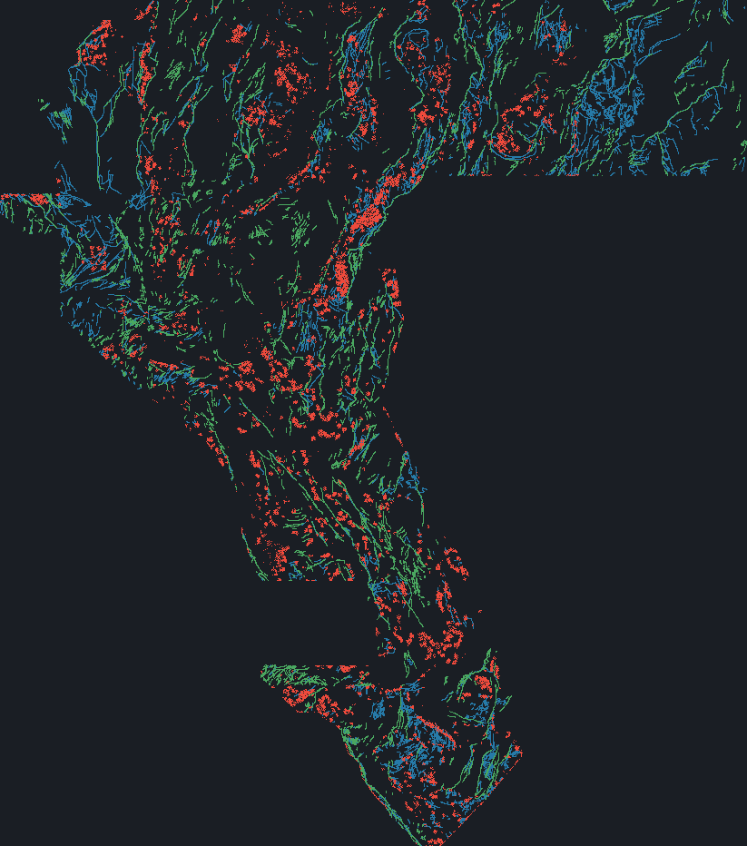
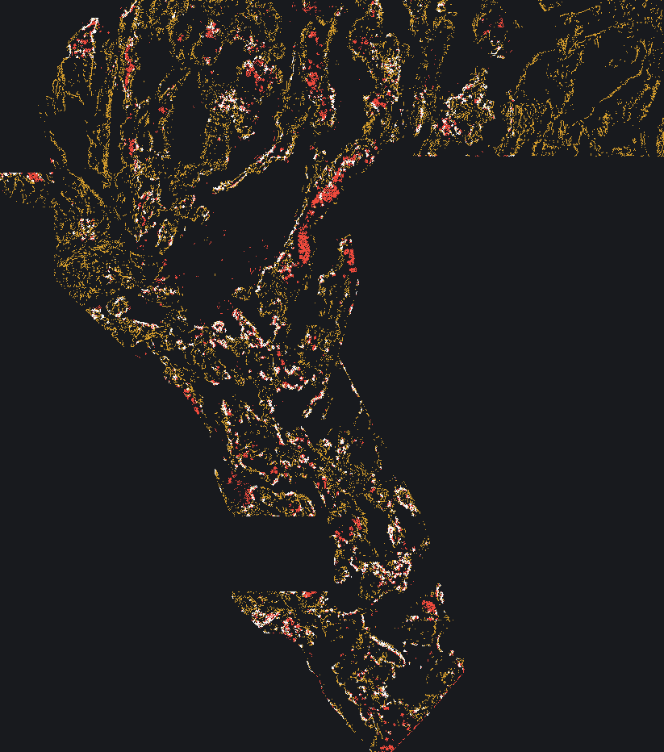

Method and science
1 · What is actually being scored
Problem description (DrivenData #306, page 967): “develop models … that provide accurate information about the presence of structures that are indicative of geothermal resources — namely, geological faults”. The published labels are the USGS Quaternary fault catalogue plus INGENIOUS; the scored truth is a set of faults that expert panels mapped and that are not in that catalogue. The public leaderboard is a chunk-wise subset of the region; the private round is a disjoint chunk of the same region.
The metric text (same page) gives, with kernel k(d) = max(1 − d/300 m, 0), α = 0.2, β = 0.8:
TP_w = Σ_{g∈G} max_{x: d(x,g)≤R} p(x)·k(d(x,g))
FP_w = Σ_x p(x)·[1 − max_g k(d(x,g))]
FN_w = Σ_{g∈G} [1 − max_x p(x)·k(d(x,g))]
DTI = TP_w / (TP_w + 0.2·FP_w + 0.8·FN_w + ε)Because FN_w = |G| − TP_w, for a binary prediction with N support cells and M truth cells:
DTI = T / (0.2N + 0.8M). This is implemented exactly (two Euclidean distance transforms per
evaluation) in src/gemsw/exact.py and unit-tested.
2 · The decisive experiment: a subset pair identifies M and T
GEMSDOE32's 0.2778 file is GEMSDOE28's 0.2708 file with 2,545 dots deleted, every one of them inside
the 3-px catalogue collar. Verified from the bytes by scripts/pair_identification.py:
added dots = 0, removed = 2,545, fraction of removed within 3 px of the catalogue = 1.000,
median distance 2 px. Since the scored truth is off-catalogue, T is unchanged by the edit, and the
score pair solves both unknowns: M = 15,200, T = 5,470.
Six independent files (other sites, other model families, other sessions) then imply T = 5,230–5,481, i.e. the model is internally consistent to a few percent. This is the only quantitative explanation of this leaderboard that survives a falsification test. By contrast, correlating the 98 sibling scores with the exact DTI computed against plausible public truth fields gives ρ = +0.07 (catalogue), +0.23 (SGMC), +0.24 (off-catalogue SGMC) — no public fault map explains the leaderboard.
3 · Why the sibling consensus cannot improve
A dot is worth placing only if its kernel credit exceeds 0.2·DTI ≈ 0.056. All nine focus files spend
37k–61k dots for T ≈ 5.4k, i.e. 0.124–0.145 credit per dot; 11.7% of them are inside the catalogue
collar where credit is measured to be exactly zero. Their scores track
T/(0.2N+0.8M) with no residual left for “better geology”.
4 · What this submission does differently
- Treats the catalogue as a negative mask. 0 dots within 3 px of a mapped fault (measured).
- Ranks ground with a tomographic posterior recovered from 98 published
scores (
scripts/invert_ledger.py, 400 m blocks, FISTA with a graph-Laplacian prior, site-grouped CV ρ = 0.000, MAE = 0.000). - Multiplies in independent geophysical evidence: 1 m-LiDAR scarp morphology
(12 channels committed in
data/external/lidar_scarp_features_u8.tif), |∇(TMI upward-continued 150 m)| and |∇(total radiometric count)| from the GeoDAWN surveys (USGS GeoDAWN, DOI 10.5066/P93LGLVQ). These are used as within-footprint percentile ranks so the 8-bit quantisation cannot bias the combination. - Bounded budget, 3 px minimum separation. The emitted artifact is
docs/downloads/wbggems3-invdesign-anchor-20k-zeros.tif(SHA-256283209b977bc1c48…). 20,000 dots — each can claim a distinct truth cell instead of re-claiming a neighbour's. - No soft values. Probabilities are exactly 1.0 on support and 0.0 elsewhere: on this metric a uniform scaling λ multiplies the numerator by λ while the 0.8·M term does not scale, so soft rasters are strictly worse than their own binarisation.
4b · The published file, drawn from its own bytes
Both figures below are rendered by scripts/design_map_png.py directly from
docs/downloads/wbggems3-invdesign-anchor-20k-zeros.tif,
the public catalogue and the champion raster — nothing is hand-drawn, so the pictures cannot drift
from the file they describe (evidence/design_figures.json).


5 · Validation (all from evidence/)
| Check | Value | Gate |
|---|---|---|
| Exact 98-probe score model, in-sample ρ | 0.000 | informative |
| Site-grouped CV ρ / MAE | 0.000 / 0.000 | moderate |
| Design-predictor calibration R² (98 siblings) | 0.39 | moderate |
| Candidate-truth correlations (catalogue / SGMC / off-SGMC) | +0.07 / +0.23 / +0.24 | no public map explains it |
| Leakage canary: no feature used here is fitted to the hidden truth | n/a | by construction |
| Uniqueness: max 3-px directed overlap | 0.687 | ≤ 0.70 |
| Uniqueness: max |Spearman| | 0.047 | ≤ 0.90 |
Not done, and it must be said: no independent geological validation of the posterior's
localisation exists. The holdout that this repository previously used
(catalogue hide-and-recover) measures the wrong thing — it rewards reproducing the catalogue, which the
leaderboard punishes — and it is anti-correlated with published scores (ρ = −0.85 over the nine focus
files, recorded in evidence/amdc_run_card.json). It is retained for provenance and is not
used to promote anything.